무선설비산업기사 (2018-10-06 기출문제)
1과목: 디지털 전자회로
1. 다음 중 아래의 변형됭 π형 평활회로에서 맥동률에 대한 설명으로 옳은 것은?
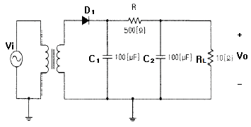
- C1에 비례한다.
- RL에 반비례한다.
- R에 비례한다.
- 입출력전압이득에 반비례한다.
(정답률: 68%)

2. 다음의 L 입력형 평활회로에서 리플을 조절할 수 있는 요소가 아닌 것은? (단, fi는 전원주파수이다.)
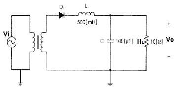
- L
- C
- RL
- fi
(정답률: 68%)
3. 전력 증폭기의 직류 입력이 60[V], 100[mA]이고, 효율이 90[%]이라면 부하에서의 출력 전력은?
- 1.8[W]
- 3.6[W]
- 5.4[W]
- 7.2[W]
(정답률: 75%)
4. 다음 회로의 명칭은?
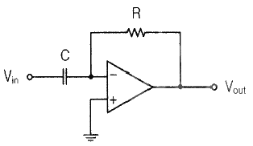
- 연산 증폭 적분기
- 연산 증폭 미분기
- 연산 증폭 비교기
- 연산 증폭 발진기
(정답률: 80%)
5. 다음 중 연산 증폭기의 특성과 관련이 없는 것은?
- 높은 이득
- 낮은 CMRR
- 높은 입력 임피던스
- 낮은 출력 임피던스
(정답률: 79%)
6. 다음 그림의 회로에서 궤환비(β)는 어떻게 되는가?
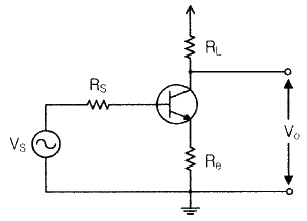
- -RL
- -(Re+RL)
- -(ReRL)
- -Re
(정답률: 64%)
7. 다음 회로에서 발진기의 출력(Vout) 듀티사이클을 50[%] 미만으로 만들기 위한 조건으로 알맞은 것은?
- R1 = R2
- R1 ＞ R2
- R1 ＜ R2
- R1C1 = R2C2
(정답률: 70%)
8. 다음 중 저주파 발진회로로 적합한 것은?
- RC발진기
- 수정발진기
- 콜피츠발진기
- 하틀리발진기
(정답률: 75%)
9. 다음 중 변복조에 대한 설명으로 옳은 것은?
- 반송파의 주파수가 높을수록 안테나의 크기가 커진다.
- 변조 과정의 정보 신호를 반송파, 낮은 주파수를 피변조파라 한다.
- 수신측에서 정보를 갖는 신호를 추출하는 과정을 검파라고 한다.
- 높은 주파수의 신호를 낮은 주파수로 이동시켜 전송하는 과정을 복조라고 한다.
(정답률: 70%)
10. 다음 중 베이스 변조회로에 대한 설명으로 틀린 것은?
- 변조에 필요한 전력이 비교적 적다.
- 출력에 불필요한 고조파가 생길 수 있다.
- 변조회로의 트랜지스터를 C급으로 바이어스 한다.
- 효율이 컬렉터 변조회로보다 적다.
(정답률: 65%)
11. 반송파 전력이 60[kW]인 경우 92[%]로 진폭 변조하였을 때 피변조파 전력은 약 얼마인가?
- 85.4[kW]
- 93.5[kW]
- 122.8[kW]
- 145.2[kW]
(정답률: 62%)
12. 다음 중 AM송신기에서 사용하는 변조기의 종류가 아닌 것은?
- 링변조기
- 암스트롱변조기
- 평행변조기
- 제곱변조기
(정답률: 74%)
13. 다음 중 1개의 안정 상태를 가지며, 외부 트리거 펄스에 의해 이 상태에서 벗어 난 후 회로정수에 의해 일정 시간이 경과했을 때 다시 처음의 안정 상태로 되돌아가는 스위칭 펄스 회로는?
- 쌍안정
- 단안정
- 비안정
- 쌍단극성
(정답률: 80%)
14. RC 직렬회로에서 R=500[kΩ], C=2[μF]이다. C의 양단이 출력이고 입력단에 20[V]를 인가하였다. 입력을 인가한 시점부터 출력이 12.64[V]가 되는 시간은?
- 10[msec]
- 20[msec]
- 1[sec]
- 2[sec]
(정답률: 66%)
15. 다음 중 논리계산식이 틀린 것은?
- A+1=A
- A+A=A
- A·A=A
- A+A·B=A
(정답률: 80%)
16. 그레이코드 1100을 10 진수로 바르게 변환한 것은 다음 중 어느 것인가?
- 6
- 7
- 8
- 9
(정답률: 77%)
17. 다음 그림과 같은 게이트는?
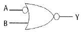
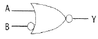

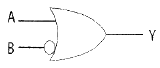
(정답률: 69%)
18. 응용 논리 회로의 설계에 사용되는 PLA(Programmed Logic Array) 내부는 어떤 논리 소자의 Array로 구성되어 있는가?
- And gate 와 Nand gate array
- Or gate 와 Nor gate array
- Not gate 와 Buffer gate array
- And gate 와 Or gate array
(정답률: 75%)
19. 3×8 디코더의 입력 A, B, C의 값이 110일 때 출력 Y7Y6Y5Y4Y3Y2Y1Y0를 바르게 나타낸 것은?
- 0 1 0 0 0 0 0 0
- 0 0 1 0 0 0 0 0
- 0 1 1 0 0 0 0 0
- 0 1 0 0 0 1 1 0
(정답률: 62%)
20. 다음 2×4 디코더의 진리표에 대한 논리식으로 맞는 것은?
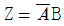
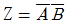
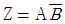
- Z = AB
(정답률: 70%)
2과목: 무선통신 기기
21. 다음 중 CDMA 방식을 FDMA 방식과 비교했을 때 장점이 아닌 것은?
- 비화성이 있어 보안에 강하다.
- 접속국의 수를 많이 할 수 있다.
- 송∙수신기 구조가 간단하다.
- 전파의 간섭이나 혼신방해에 강하다.
(정답률: 79%)
22. 다음 블록 다이어그램의 출력에 나타나는 피변조 신호는 어느 것인가?
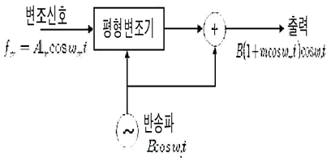
- DSB-LC
- DSB-SC
- SSB
- VSB
(정답률: 64%)
23. 무선 송신기에서 주파수 체배기에 의해 고조파 신호 발생은 필연적이다. 불필요한 고조파 신호를 제거하는 회로는 무엇인가?
- 미분회로
- 발진회로
- 필터회로
- 증폭회로
(정답률: 84%)
24. 통신속도가 200[baud]이고, 보오 당 신호레벨이 4일 때 1분 간 데이터 전송속도는?
- 12,000[bps]
- 24,000[bps]
- 48,000[bps]
- 72,000[bps]
(정답률: 78%)
25. 다음 중 LORAN-C에 대한 설명으로 옳은 것은?
- 사용 주파수의 일종으로 1,750[kHz]가 있다.
- 하나의 주국과 하나의 종국을 쌍으로 이용하는 쌍곡선 항법이다.
- 유럽에서 사용되고 연속파의 위상차를 이용하여 위치를 구하는 방식이다.
- 하나의 주국과 2개 이상의 종국으로 구성된 체인을 이용하는 쌍곡선 항법이다.
(정답률: 66%)
26. 다음 중 통신 위성체의 텔레메트리(Telemetry) 정보의 내용으로 적합하지 않은 것은?
- 위성추진시스템의 가스 압력 값
- 열제어 시스템에서의 온도감지의 출력 값
- 명령에 대한 데이터 확인
- 주파수 변환 값
(정답률: 70%)
27. 다음 중 DVB-T(COFDM) 전송방식에서 사용하는 변조방식이 아닌 것은?
- QPSK(Quadrature Phase Shift Keying)
- 16-QAM(Quadrature Amplitude Modulation)
- 64-QAM(Quadrature Amplitude Modulation)
- Binary FSK(Frequency Shift Keying)
(정답률: 84%)
28. 다음 중 안테나 이득이란 목적하는 방향으로 얼마만큼 집중하여 복사하는가를 나타내는 것으로 해당 되지 않는 것은?
- 절대이득
- 동일이득
- 상대이득
- 지상이득
(정답률: 63%)
29. 위성 통신에서 전자 빔과 진행파 전계와의 상호 작용에 의해 마이크로파 전력을 증폭하는 기능을 하는 것은 무엇인가?
- 진행파관(TWT)
- 클라이스트론(Klystron)
- 자전관(Magnetron)
- 반사기
(정답률: 78%)
30. 다음 중 이동통신시스템에서 사용하는 장치에 대한 설명으로 틀린 것은?
- UPS는 시스템에 상시 안정된 전류를 공급하는 장치이다.
- 정전압회로는 일정한 크기의 전압을 공급하는 회로이다.
- 축전지의 용량은 AH로 표기한다.
- GPS는 3개 이상의 위성으로부터 시간과 거리를 측정한다.
(정답률: 70%)
31. 다양한 통신 시스템에서 안테나는 상호간에 송∙수신하기 위한 기본요소이다. 다음 중 안테나의 파라미터에 해당하지 않는 것은?
- 실효복사전력
- 전압 정재파비
- 안테나 지향성
- 안테나 전원 장치
(정답률: 80%)
32. 태양발전설비에서 부조일수 3일, 부하의 수요전력량 90[kWh], 축전지계수 0.425일 때 축전지 용량은 약 얼마인가?(오류 신고가 접수된 문제입니다. 반드시 정답과 해설을 확인하시기 바랍니다.)
- 114[kWh]
- 153[kWh]
- 635[kWh]
- 847[kWh]
(정답률: 46%)
33. 단상 전파 정류회로에서 150[Vrms]의 입력을 정류기에 가했을 때, 다이오드에 인가된 역내전압은 약 얼마인가? (단, 정류기의 순방향 저항은 무시하며 평활회로는 π형이다.)
- 150[V]
- 212[V]
- 300[V]
- 424[V]
(정답률: 53%)
34. 전압변동율이 10[%]이고 정격부하 연결시의 출력전압이 220[V]였다면, 무부하시 출력전압은 몇 [V]인가?
- 221
- 232
- 242
- 253
(정답률: 79%)
35. 다음 중 정합필터는 어떤 회로로 구현할 수 있는가?
- 하나의 곱셈기와 하나의 적분기
- 하나의 곱셈기와 하나의 미분기
- 하나의 가산기와 하나의 적분기
- 하나의 가산기와 하나의 미분기
(정답률: 61%)
36. 다음 중 스미스 챠트(Smith Chart)를 이용하여 구할 수 없는 것은?
- 임피던스
- 역률
- 정재파비
- 반사계수
(정답률: 78%)
37. 다음 중 정류 장치의 특성 해석에 이용되는 파라미터로서 입력교류 전력에 대한 출력직류전력의 비로 나타내어지는 것은 무엇인가?
- 맥동률
- 한계변환율
- 정류효율
- 최대역전압
(정답률: 72%)
38. 다음 중 송신기의 점유주파수대역폭 측정법이 아닌 것은?
- 필터를 사용하는 방법
- 파노라마 수신기를 이용하는 방법
- 주파수 편이계를 사용하는 방법
- 스펙트럼 분석기를 사용하는 방법
(정답률: 68%)
39. 코올라우시 브리지(Kohlraush Bridge)를 사용하여 전해액의 저항이나 접지저항을 측정할 때 직규 전원 대신 교류전원을 사용한다. 전원을 직류로 사용하지 않는 이유로 가장 적합한 것은?
- 전극 내부 저항이 감소하기 때문에
- 전극 표면에서 정전기 발생을 막기 위해서
- 전극 표면에의 발열을 방지하기 위해서
- 전극 표면의 분극작용을 방지하기 위해서
(정답률: 79%)
40. 다음 중 접지안테나의 실효 저항 측정 방법이 아닌 것은?
- 치환법
- 저항삽입법
- Q미터법
- 실효리액턴스법
(정답률: 71%)
3과목: 안테나 개론
41. 도체 내의 전자파의 전파에 대한 설명으로 틀린 것은?
- 도체내의 모든 점에서 전도전류 밀도는 전계에 비례한다.
- 전도전류 밀도와 전계의 세기는 도체 내부로 갈수록 지수함수적으로 감쇠한다.
- 도체표면에 유도되는 전류는 전류밀도 방향에 수직인 도체 내부로 전파되며 Ohm손실로 인하여 감쇠한다.
- 전자파의 에너지는 도체내부로 전파되기 때문에 도체는 전자파의 도파역할을 하게된다.
(정답률: 52%)
42. 다음 중 균일 평면 전자파에 대한 설명으로 틀린 것은?
- 전계와 자계가 모두 전파방향과 수직인 평면 내에 있다.
- 에너지 밀도가 변하지 않고 파동의 각 부분이 같은 방향으로 직진하는 이상적인 파동으로서 송신안테나로부터 원거리의 영역에서 존재한다.
- 종파이며 'TE'파로 불린다.
- 균일한 평면파는 2차원 면에 무한히 퍼져있기 위한 무한량의 에너지를 필요로 한다.
(정답률: 80%)
43. 무선통신에서 전파의 전파통로에 의한 다음 분류 중 유형이 다른 것은?
- 직접파
- 지표파
- 회절파
- 전리층파
(정답률: 73%)
44. 선로1과 선로2의 결합부분에서 반사계수가 0.7일 경우, 결합부분의 손실을 [dB]로 표현하면 약 얼마인가?
- 0.3[dB]
- 1.5[dB]
- 3[dB]
- 6[dB]
(정답률: 58%)
45. 다음 중 TM파(Transverse Magnetic Wave)에 대한 설명으로 틀린 것은?
- H파라고도 한다.
- E파라고도 한다.
- 축방향(진행방향)에 전계성분은 있다.
- 축방향(진행방향)에 자계성분은 없다.
(정답률: 74%)
46. 다음 중 도파관의 전기적 특성을 설명한 것으로 틀린 것은?
- 자계에 평행으로 위치한 저항 판은 감쇠기로 동작 한다.
- 관내를 전파하는 전자파의 파장은 자유공간에서 보다 항상 길다.
- 특성 임피던스는 관내의 전계 강도 대 자계강도에 대한 비이다.
- 관내의 장애물이 전계에 영향을 미칠 때는 C성분으로 작용한다.
(정답률: 38%)
47. 다음 중 급전선에 대한 설명으로 옳은 것은?
- 전송 효율이 좋고 정합이 용이해야 한다.
- 특성임피던스는 길이와 관계가 있다.
- 감쇠정수가 커야 한다.
- 무왜곡 조건은 RG=CL로 정의 된다.
(정답률: 78%)
48. 다음 중 동조 급전선의 특징에 대한 설명으로 틀린 것은?
- 정합장치가 불필요하다.
- 급전선 상에 정재파를 실어 급전한다.
- 전송효율이 비동조 급전선보다 좋다.
- 급전선의 길이와 파장은 일정한 관계가 있다.
(정답률: 67%)
49. 다음 중 방사상 접지의 접지저항은?
- 약 1[Ω]
- 약 5[Ω]
- 약 10[Ω]
- 약 15[Ω]
(정답률: 69%)
50. 다음 중 야기안테나에 대한 설명으로 틀린 것은?
- 단방향의 예리한 지향성을 갖는다.
- 도파기 수를 증가하면 광대역성을 갖는다.
- 반사기는 λ/2 보다 길게 되므로 유도성분을 갖는다.
- 도파기의 길이는 투사기의 길이보다 짧다.
(정답률: 63%)
51. 임의의 송수신 지점 간 무선 통신에서 전송거리가 1[km]에서 10[km]로 증가 시 자유공간의 전송손실 특성으로 맞는 것은?
- 손실이 6[dB] 증가한다.
- 손실이 10[dB] 증가한다.
- 손실이 20[dB] 증가한다.
- 손실이 40[dB] 증가한다.
(정답률: 64%)
52. 초고주파 대역에서 사용하는 마이크로스트립(Microstrip) 전송선로가 비유전율 εr=7.6을 가지며, 기판의 폭(w)과 두께(h)의 비가 w/h=5일 때, 위상속도는 얼마인가?
- 1.0×108[m/s]
- 1.2×108[m/s]
- 1.4×108[m/s]
- 1.6×108[m/s]
(정답률: 59%)
53. 단일도선(Single wire)에 균일한 속도로 전하가 움직이고 있다. 다음 중 방사가 발생하지 않는 경우는?
- 서로 다른 두께의 도선이 연결된 경우
- 굽은 도선
- 곧은 무한길이의 도선
- 꺾인 도선
(정답률: 73%)
54. 다음 중 근거리장(Near field)에서 안테나로부터 거리가 증가할 때, 전기장 세기는 어떻게 변하는가?
- 거리의 3제곱에 비례한다.
- 거리의 3제곱에 반비례한다.
- 거리의 로그에 비례한다.
- 사용된 공중선의 종류에 따라 다르게 변한다.
(정답률: 62%)
55. 다음 중 전파의 성질에 관한 설명으로 틀린 것은?
- 회절현상이 있다.
- 균일 매질 중을 전파하는 전파는 직진한다.
- 간섭이 있다.
- 종파이다.
(정답률: 82%)
56. 대류권파의 전파 현상을 설명하는 것은?
- 호이겐스(Huygens)의 원리
- 스넬(Snell)의 법칙
- 캐넬리-헤비사이드(Kennelly-Heaviside)의 법칙
- 브레이트 튜브(Breite Tuve)의 정리
(정답률: 75%)
57. 전리층 반사파는 입사각이 어느 정도 이상으로 커야만 지구로 돌아온다. 이때 전리층 반사파가 최초로 지표면에 도달하는 지점과 송신점 간의 거리를 무엇이라 하는가?
- 불감지대(Skip Zone)
- 프리즈넬 존(Fresnel Zone)
- 블랭킷(Blanket) 에어리어
- 도약거리(Skip Distance)
(정답률: 81%)
58. 중파방송에서 주로 사용되는 전파방식은?
- 공간파
- 지표파
- 회절파
- 직접파
(정답률: 70%)
59. 다음 중 전리층을 이용한 단파통신에서 최적운용주파수에 대한 설명으로 옳은 것은?
- 전리층 반사주파수 중에서 가장 낮은 주파수
- 전리층 반사주파수 중에서 가장 높은 주파수
- 최저사용주파수의 85%에 해당하는 주파수
- 최고사용주파수의 85%에 해당하는 주파수
(정답률: 75%)
60. 다음 중 페이딩에 대한 설명으로 틀린 것은?
- 공간파와 지표파의 간섭에 의해서 생긴다.
- 주기가 느리고 규칙적으로 나타난다.
- 전파의 세기가 크게 변동된다.
- 단파 통신에 많이 나타난다.
(정답률: 78%)
4과목: 전자계산기 일반 및 무선설비기준
61. 다음 문장의 빈칸에 들어갈 용어로 적합한 것은?
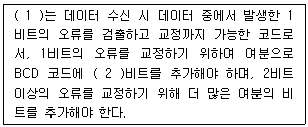
- (1) : 3초과 코드, (2) : 2
- (1) : 그레이 코드, (2) : 3
- (1) : 해밍 코드, (2) : 3
- (1) : 패리티 체크 코드, (2) : 2
(정답률: 81%)
62. 다음 페이지 관리 기법 중 각 페이지 프레임에 카운터를 두어 참조된 횟수를 유지시켜 가장 적은 수를 가진 페이지 프레임을 교체하는 방법은?
- LFU 알고리즘
- 2차 기회 알고리즘
- LRU 알고리즘
- FIFO 알고리즘
(정답률: 64%)
63. 다음 중 컴퓨터가 중간 변환 과정 없이 직접 이해할 수 있는 언어는 무엇인가?
- 기계어
- 어셈블리어
- ALGOL
- PL/1
(정답률: 84%)
64. 다음 중 기억공간의 효율화를 위해 단편화된 가용공간을 모아 하나의 큰 가용공간으로 만들어 메모리를 반납하는 것은?
- Address Mapping
- Virtual Address Space
- Garbage Collection
- Time Slice
(정답률: 65%)
65. 프로세서의 제어 장치에 관한 설명으로 틀린 것은?
- 순서논리회로에 의한 고정 배선 방식과 마이크로프로그램 방식이 있다.
- 마이크로프로그램 방식이 고정 배선 방식보다 속도가 빠르다.
- 고정 배선 방식은 부품의 수는 최대화 된다.
- 마이크로프로그램 방식에서는 제어 메모리가 필요하다.
(정답률: 61%)
66. 10진수 20에 대해 2진법, 8진법 및 16진법의 표현으로 옳은 것은?
- 10010, 23, 13
- 10010, 24, 14
- 10100, 23, 13
- 10100, 24, 14
(정답률: 76%)
67. 다음 중 CPU의 상태를 나타내는 플래그(Flag)가 아닌 것은?
- 패리티(Parity) 플래그
- 사인(Sign) 플래그
- 트랩(Trap) 플래그
- 제로(Zero) 플래그
(정답률: 63%)
68. 다음 응용 소프트웨어 중 성격이 다른 소프트웨어는?
- WINZIP
- WINARJ
- ALZIP
- WF_FTP
(정답률: 79%)
69. 커널을 메모리에 로드하여 실행하는 대신 플래시에서 직접 수행하고 임베디드 시스템의 제한된 메모리 자원을 극복하기 위한 기술을 무엇이라 하는가?
- 부팅지원 기술
- XIP(eXecution-In-Place) 기술
- 저전력 지원 기술
- 자원관리 기술
(정답률: 72%)
70. 논리식
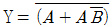
를 간략화하면?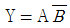
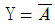
- Y = 1
- Y = AB
(정답률: 76%)
71. 전파법에 대한 설명으로 옳은 것은?
- 방송통신위원회 훈령이다.
- 대통령령이다.
- 법률이다.
- 무선통신사업자의 약관이다.
(정답률: 72%)
72. 다음 중 전력선통신설비에서 발사되는 주파수 범위는 어느 것인가?
- 15[kHz]~500[kHz]
- 9[kHz]~450[kHz]
- 9[kHz]~30[MHz]
- 5[kHz]~450[kHz]
(정답률: 60%)
73. 무선국이 하는 업무와 무선국의 분류는 다음 중 무엇으로 정하는가?
- 방송통신위원회 고시
- 대통령령
- 국토교통부령
- 국립전파연구원장
(정답률: 74%)
74. 지정시험기관 업무를 중지 또는 폐지하고자 할 때에는 신고서를 중지 또는 폐지 예정일 몇 일 전까지 제출해야 하는가?
- 30일
- 35일
- 40일
- 45일
(정답률: 86%)
75. 다음 중 무선설비 기성부분검사와 준공검사에 대한 설명으로 틀린 것은?
- 공사현장에 주요공사가 완료되고 현장이 정리단계에 있을 때에는 준공 2개월 전에 준공기한 내 준공 가능여부 및 미진사항의 사전보완을 위해 예비 준공검사를 실시하여야 한다.
- 감리사는 시공자로부터 시험운영계획서를 제출받아 검토·확정하여 시험운용 20일 전까지 발주자 및 시공자에게 통보하여야 한다.
- 감리업자 대표자는 기성부분검사원 또는 준공계를 접수하였을 때는 30일 안에 소속 감리사 중 특급감리사급 이상의 자를 검사자로 임명하고, 이 사실을 즉시 본인과 발주자에게 통보하여야 한다.
- 예비준공검사는 감리사가 확인한 정산설계도서 등에 의거 검사하여야하며, 그 검사 내용은 준공검사에 준하여 철저히 시행하여야 한다.
(정답률: 77%)
76. 산업용 전파응용설비의 전계강도 최대 허용치로서 옳은 것은?
- 100[m]거리에서 100[μV/m] 이하일 것
- 30[m]거리에서 100[μV/m] 이하일 것
- 50[m]거리에서 100[μV/m] 이하일 것
- 100[m]거리에서 50[μV/m] 이하일 것
(정답률: 68%)
77. 406[MHz]대 위성 EPIRB(위성비상위치지시용무선표지설비)의 전지용량은 송신설비를 연속하여 몇 시간 이상 작동할 수 있어야 하는가?
- 12시간
- 24시간
- 48시간
- 72시간
(정답률: 58%)
78. 무선설비 공사가 품질확보 상 미흡 또는 중대한 위해를 발생시킬 수 있다고 판단될 때 공사중지를 지시할 수 있으며, 공사중지에는 부분중지와 전면중지로 구분된다. 다음 중 부분중지에 해당되는 경우는?
- 재시공 지시가 이행되지 않는 상태에서는 다음 단계의 공정이 진행됨으로써 하자발생이 될 수 있다고 판단될 경우
- 시공자가 고의로 정보통신시설 설비 및 구축공사의 추진을 심히 지연시킬 경우
- 정보통신공사의 부실 발생우려가 농후한 상황에서 적절히 조치를 취하지 않은 채 공사를 계속 진행할 경우
- 천재지변 등 불가항력적인 사태가 발생하여 공사를 계속할 수 없다고 판단될 경우
(정답률: 79%)
79. 다음 중 정보통신설비 공사의 감리원 업무범위가 아닌 것은?
- 설계변경서 작성
- 공사계획 및 공정표의 검토
- 공사진척부분에 대한 조사 및 검사
- 공사업자가 작성한 시공상세도면의 검토 및 확인
(정답률: 82%)
80. 다음 중 '방송통신기자재 등의 적합성평가에 관한 고시'에서 규정하는 용어의 정의로 틀린 것은?
- '사후관리'라 함은 적합성평가를 받은 기자재가 적합성평가 기준대로 제조·수립 또는 판매되고 있는지 관련법에 따라 조사 또는 시험하는 것을 말한다.
- '기본모델'이란 방송통신기기 내부의 전기적인 회로·구조·성능이 동일하고 기능이 유사한 제품군 중 표본이 되는 기자재를 말한다.
- '파생모델'이란 기본모델과 전기적인 회로·구조·성능만 다르고 그 부가적인 기능은 동일한 기자재를 말한다.
- '무선 송·수신용 부품'이란 차폐된 함체 또는 칩에 내장된 무선 주파수의 발진, 변조 또는 복조, 증폭부 등과 안테나로 구성된 것으로 시스템에 하나의 부품으로 내장되거나 장착될 수 있는 것을 말한다.
(정답률: 83%)